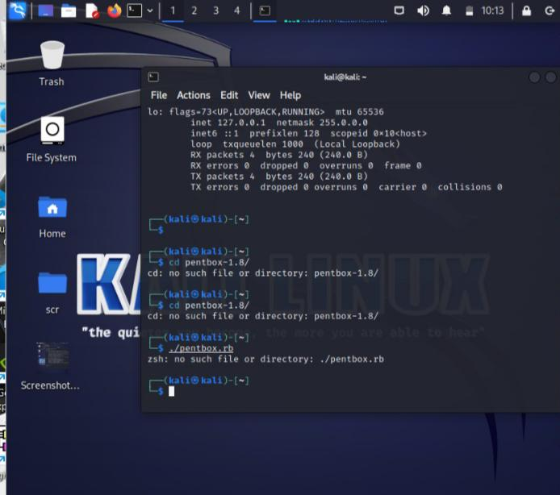
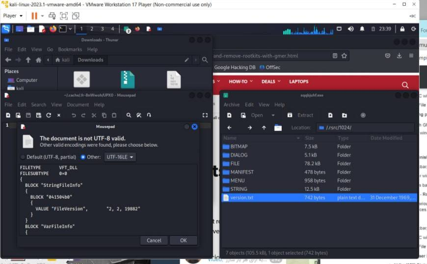

Welcome to the Introduction to IoT and Cybersecurity course! In this course, we will explore the exciting world of the Internet of Things (IoT) and delve into the critical importance of cybersecurity in this rapidly evolving landscape. As the IoT continues to revolutionize industries and our daily lives, it brings forth new challenges and vulnerabilities that must be addressed to ensure the security and privacy of connected devices and data. Throughout this course, we will examine the fundamentals of IoT, including its architecture and components, and then dive into the various cybersecurity threats and risks associated with IoT deployments. We will explore best practices, mitigation strategies, and cutting-edge technologies to protect IoT systems from potential attacks. By the end of this course, you will have gained a solid foundation in both IoT and cybersecurity, enabling you to navigate this dynamic field with confidence and contribute to building secure and resilient IoT solutions. Get ready to embark on an exciting journey at the intersection of IoT and cybersecurity! in this section I will demonstrate a summery of activities we have done and analyse them by my own word.
Activity 2(honey pot)

overall
As you can see because of the errors I had, the codes didn’t work on my PC. However, I watched some videos on YouTube and asked my friends about the activity along with reading articles so that I could be able to understand the concept of the project. Therefore, as far as I understood honey pot have been using by people/organizations to practice how an attacker behave and sometimes for confusing the attacker. Therefore, in my opinion, we can define a honeypot system for our database and block every attack that would have happen to our website but it has some risks that can be detected by using both honeynet and honeypot. (Videos and website added to the references)
Activity 3 (DDOS)
reflection
By doing researches about DDOS attacks first thing that came to my mind was the prevention not the detection and as far as I researched the best way is to use a strong firewall. As we all know DDOS attacks cause traffic in the system such as cars in a way that would be too many. Therefore, if we build a way with large amount of space the risk of having a DDOS attack will be reduced.
Activity4
What are the security implications of the digital economy?
As economies shift to digital and online models, threats can quickly outpace traditional approaches to data security. More than ever, governments and organizations need to be proactive in creating and adapting systems to face these threats. By safeguarding their own operations, the information of people who use their services will be better protected as well.
The brief, written in close collaboration with Macmillan Keck, seeks to identify specific attributes of cybersecurity and data security frameworks that can help policymakers and regulators build a digital economy that includes — and serves — everyone.
What is a 'fully digital enterprise'?
A Digital Enterprise is a business that has completed a digitalization strategy (aka, digital transformation) to fully incorporate digital tools and technologies across all aspects of their operations, from ideation thru realization to utilization.
What are the cyber Security challenges/concerns with a fully digital enterprise?
1) Phishing Attacks
The biggest, most damaging and most widespread threat facing small businesses is phishing attacks. Phishing accounts for 90% of all breaches that organizations face, they’ve grown 65% over the last year, and they account for over $12 billion in business losses.
2) Malware Attacks
Malware is the second big threat facing small businesses. It encompasses a variety of cyber threats such as trojans and viruses. Malware is a varied term for malicious code that hackers create to gain access to networks, steal data, or destroy data on computers. Malware usually comes from malicious website downloads, spam emails or from connecting to other infected machines or devices.
3) Ransomware
Ransomware is one of the most common cyber-attacks, hitting thousands of businesses every year. These attacks have only become more common,, as they are one of the most lucrative forms of attacks. Ransomware involves encrypting company data so that it cannot be used or accessed, and then forcing the company to pay a ransom to unlock the data. This leaves businesses with a tough choice – to pay the ransom and potentially lose huge sums of money, or cripple their services with a loss of data.
4) Weak Passwords
Another big threat facing small businesses is employees using weak or easily guessed passwords. Many small businesses use multiple cloud based services, that require different accounts. These services often can contain sensitive data and financial information. Using easily guessed passwords, or using the same passwords for multiple accounts, can cause this data to become compromised.
5) Insider Threats
The final major threat facing small businesses is the insider threat. An insider threat is a risk to an organization that is caused by the actions of employees, former employees, business contractors or associates. These actors can access critical data about your company, and they can case harmful effects through greed or malice, or simply through ignorance and carelessness. Verizon found that 25% of data breaches were caused by insider threats.
Do you agree with the views expressed, especially in light of the 'energy crisis' experienced worldwide in 2022
Well in my opinion, the phenomenal we are facing can have several isuues which may be price changes and the economical issues. Although we are facing a war between Russia and ukrain that have cused sever change in energy prices besides the horrified death of people. Therefore, I cannot say that I’m aginst the mentioned on the title, however, I am not fully agree with the expression.
Activity 5
Discuss the differences between OWASP Top 10 vulnerabilities 2023 and IEEE Top 10 vulnerabilities 2021.
Top 10 OWASP 2023vulnerabilities:
1.Broken object level authorization
2.Broken authentication
3.Broken object property level authorization
4.Unrestricted resource consumption
5.Broken function level authorization
6.Server side request forgery
7.Security misconfiguration
8.Lack of protection from automated threats
9.Improper asset management
10.Unsafe consumption of APIs
Top 10 IEEE 2021 vulnerabilities:
1. Broken Access Control
2. Cryptographic Failures
3. Injection
4. Insecure Design
5. Security Misconfiguration
6. Vulnerable and Outdated Components
7. Identification and Authentication Failures
8. Software and Data Integrity Failures
9. Security Logging and Monitoring Features
10. Server-Side Request Forgery
THEREFORE!
I would like to mention that the vulnerabilities or in other word wick points of them in two period of time can show that the risks became more sophisticated to happen. Although there are still vulnerabilities for users that should be considered but knowing them make us to build a well organized protection for our developing project.
Activity 6
|
description
| activity |
goal |
| reconnaissance |
Gathering information about the target |
- Identifying potential targets
- Scanning for vulnerabilities
- Researching the target's infrastructure |
Identify vulnerable targets |
| weaponization |
Creating the exploit or malware |
- Developing malware or exploit code
- Customizing payload to evade detection
- Building the delivery mechanism |
Create a weaponized payload |
| delivery |
Transmitting the malware to the target |
- Phishing emails or spear-phishing attacks
- Watering hole attacks
- Supply chain compromise |
Deliver the weaponized payload to the target |
| exploitation |
Executing the attack against the target |
- Exploiting vulnerabilities in the target's system
- Gaining initial access
- Establishing persistence |
Gain unauthorized access to the target system |
| installation |
Installing the malware on the target's infrastructure |
- Dropping and executing malware
- Establishing a command-and-control (C2) channel
- Hiding malicious activities |
Establish a persistent presence within the target's network |
| command and control |
Maintaining control over the compromised system |
- Communicating with the compromised system
- Exfiltrating data
- Downloading additional tools or malware |
Control the compromised system and maintain persistence |
| action on objectives |
Performing the intended actions or exfiltrating data |
- Data theft
- Espionage
- Data manipulation or destruction |
Achieve the attacker's ultimate objective |
reflection
The SolarWinds supply chain attack, analyzed through the lens of the Cyber Kill Chain model, highlights the meticulous planning and execution of a sophisticated cyber attack. It underscores the importance of robust security measures, continuous monitoring, and user awareness to detect and prevent potential threats at an early stage. The attack emphasizes the need for proactive vulnerability management, strong access controls, and network monitoring to limit unauthorized access and minimize the impact of an attack. Furthermore, it underscores the significance of data protection measures, incident response capabilities, and forensic investigations to mitigate risks and enhance overall cybersecurity resilience. Ultimately, the SolarWinds attack serves as a stark reminder that organizations must remain vigilant, adaptive, and well-prepared in the face of evolving and persistent cyber threats.
Lab Activities
Impacting the ecosystem
As more and more researchers have explored various vulnerabilities that exist within the Stagefright library and associated libraries, we expect to see more vulnerabilities in the same area. Many researchers in the community have said Google has replied to their reported bugs saying that they were duplicate or already discovered internally.
The research provided by Zimperium in this area has been a catalyst for change. Following our initial Stagefright announcement, industry-leading vendors made a clear statement that security updates will be provided on a monthly basis. So far, two monthly Nexus Security Bulletins have already posted. Next week will be the third.
Detecting attacks with z9
At the heart of all Zimperium technology is our z9 engine, which has been trained with the capability to detect media processing attacks through all attack vectors. No additional update is required to detect this new pair of vulnerabilities. We are diligently monitoring sources for in-the-wild attacks.
reflection
The impact of vulnerabilities within the Stagefright library and associated libraries has prompted increased research and the discovery of more vulnerabilities in this area. Google has acknowledged some of these reported bugs as duplicates or already known internally. However, the research conducted by Zimperium has played a crucial role in driving change. The Stagefright announcement by Zimperium led to industry-leading vendors committing to providing monthly security updates. Two monthly Nexus Security Bulletins have already been released, with the third one scheduled for next week. Zimperium's z9 engine, at the core of their technology, is trained to detect media processing attacks across all attack vectors, including these new vulnerabilities. No additional update is necessary for z9 to identify these vulnerabilities, and Zimperium continues to actively monitor sources for real-world attacks.
identifying search options in Metasploit
reflection
While identifying search options in Metasploit is essential for navigating and utilizing the framework effectively, it's important to note that it is just one aspect of using Metasploit for penetration testing and vulnerability assessments. Beyond search options, other critical factors come into play, such as understanding the vulnerabilities and exploits themselves, correctly configuring and executing modules, and interpreting the results obtained. Additionally, having a deep understanding of networking, systems, and security concepts is crucial to effectively utilize Metasploit and ensure accurate and reliable results. Therefore, while identifying search options is a vital skill, it is not the sole determinant of success in using Metasploit. A comprehensive understanding of the tool, coupled with strong technical expertise and methodologies, is equally important in conducting successful security assessments and evaluations.
(source added in references)
annalyzing protocol by wireshark
reflection
When it comes to the analysis of protocols using Wireshark, it offers a valuable approach for delving into network communications. By capturing and examining packet data, Wireshark allows for a detailed exploration of various protocols employed in network communication. This process aids in the identification of potential issues, troubleshooting network problems, and comprehending protocol behaviors. With its broad protocol support, Wireshark facilitates the examination of network protocols like TCP/IP, DNS, HTTP, SMTP, and many others. It provides comprehensive insights into packet headers, payload contents, and even enables protocol-level filtering and dissection. The user-friendly interface and comprehensive features of Wireshark make it an essential tool for network administrators, security professionals, and individuals interested in comprehending and optimizing network protocols. Whether it's investigating performance bottlenecks, detecting security risks, or gaining in-depth knowledge of network communication, Wireshark equips users with the necessary capabilities for thorough protocol analysis.
spoofing attack
reflection
Confirming the spoofing attack in Wireshark involves using the tool to analyze network traffic and identify any signs of malicious activity. By examining packet headers, payload contents, and other network data, Wireshark can help detect anomalies that indicate the presence of a spoofing attack. This process enables network administrators and security professionals to validate the occurrence of a spoofing attack and take appropriate countermeasures to protect the network infrastructure.
To prevent spoofing attacks:
Use network access controls, such as firewalls and ACLs, to restrict unauthorized access.
Implement network segmentation to limit the impact of attacks.
Deploy strong authentication mechanisms like 2FA or MFA.
Utilize secure network protocols like SSH or SSL/TLS.
Keep software and firmware up-to-date with the latest security patches.
Monitor network traffic with IDS or IPS systems.
Educate users and staff about security risks and best practices.
running scanning tools

reflection
Running scanning tools is a crucial aspect of network security. These tools are designed to identify vulnerabilities, misconfigurations, and potential entry points that could be exploited by attackers. By conducting regular scans, organizations can proactively discover and address security weaknesses, reducing the risk of unauthorized access and data breaches. Scanning tools, such as port scanners, vulnerability scanners, and network mappers, provide valuable insights into the security posture of a network. They help administrators prioritize security measures, apply patches, and implement necessary safeguards to protect critical systems and data. Running scanning tools is an essential practice for maintaining a robust and secure network infrastructure.
exploiting a website using sql injection
reflection
Instead of using SQL injection, one alternative method for interacting with a database securely is by utilizing parameterized queries or prepared statements. These methods involve separating the SQL code from the data input by using placeholders or parameters. The actual values are then provided separately, ensuring that they are treated as data and not as part of the SQL code itself. This approach helps prevent malicious SQL code injection because the database system knows how to distinguish between the SQL code and the data being supplied. Parameterized queries or prepared statements are supported by most programming languages and database frameworks, making them a widely adopted and recommended method for secure database interactions.
Impacting the ecosystem
As more and more researchers have explored various vulnerabilities that exist within the Stagefright library and associated libraries, we expect to see more vulnerabilities in the same area. Many researchers in the community have said Google has replied to their reported bugs saying that they were duplicate or already discovered internally.
The research provided by Zimperium in this area has been a catalyst for change. Following our initial Stagefright announcement, industry-leading vendors made a clear statement that security updates will be provided on a monthly basis. So far, two monthly Nexus Security Bulletins have already posted. Next week will be the third.
best elevator
| Objective |
IoT Solution |
| Increase customer loyalty |
Real-time updates on elevator status, personalized services, proactive maintenance reminders |
| Improve service maintenance and predictive maintenance |
Real-time monitoring of elevator performance, predictive analytics for proactive maintenance scheduling |
| Manage spare parts inventory more efficiently |
Real-time inventory tracking, automated reordering, streamlined supply chain |
| Improve product design and technician training |
Data analysis for design improvements, real-time diagnostic data, remote training and support |
| Improve uptime and field service efficiency |
Real-time monitoring, proactive issue detection, remote troubleshooting and diagnostics |
| Allocate scarce service technicians more efficiently |
Real-time visibility into elevator statuses, priority-based allocation, efficient resource management |
| Communicate more effectively with suppliers |
Integration of supplier systems, real-time data sharing, improved coordination and transparency |